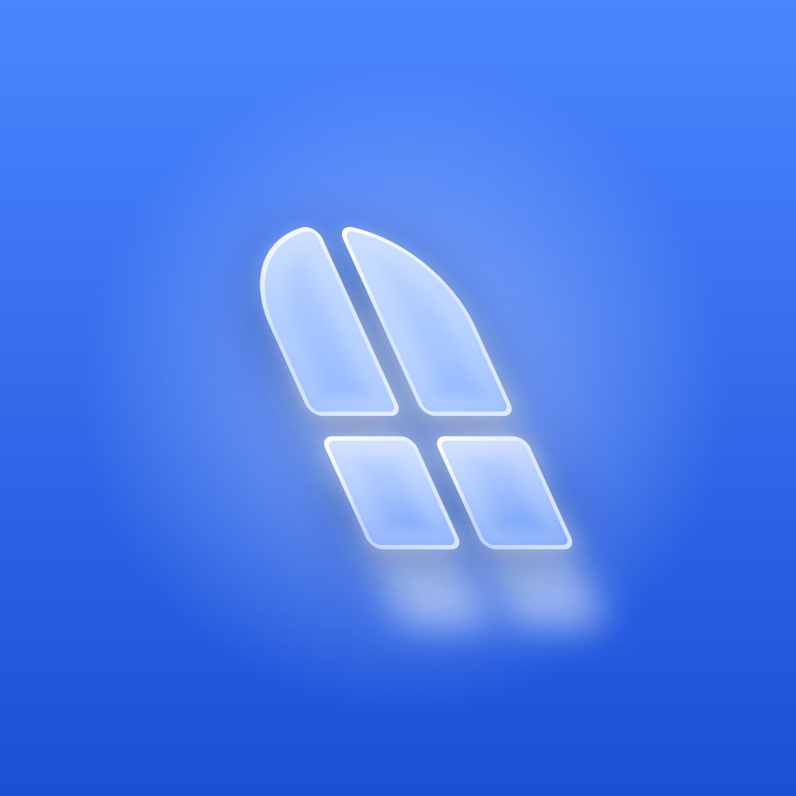
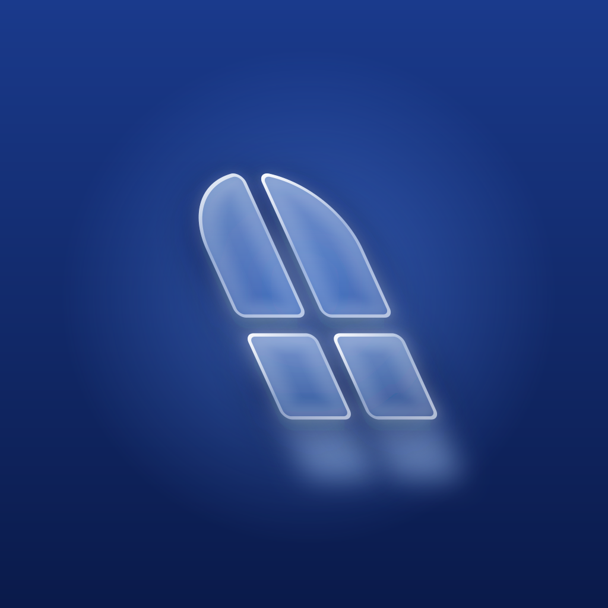

Liquid glass, in the style of Apple’s iOS 26 icons. Day and night are the same scene at two light levels: same window, same glass, same light on the floor; at night the blue deepens toward navy and the glass gets quieter. Icons are shown the way an Android launcher shows them: the central 72dp of the 108dp adaptive canvas, in a rounded-square mask, at 108px and 48px, on light and dark home screens.

